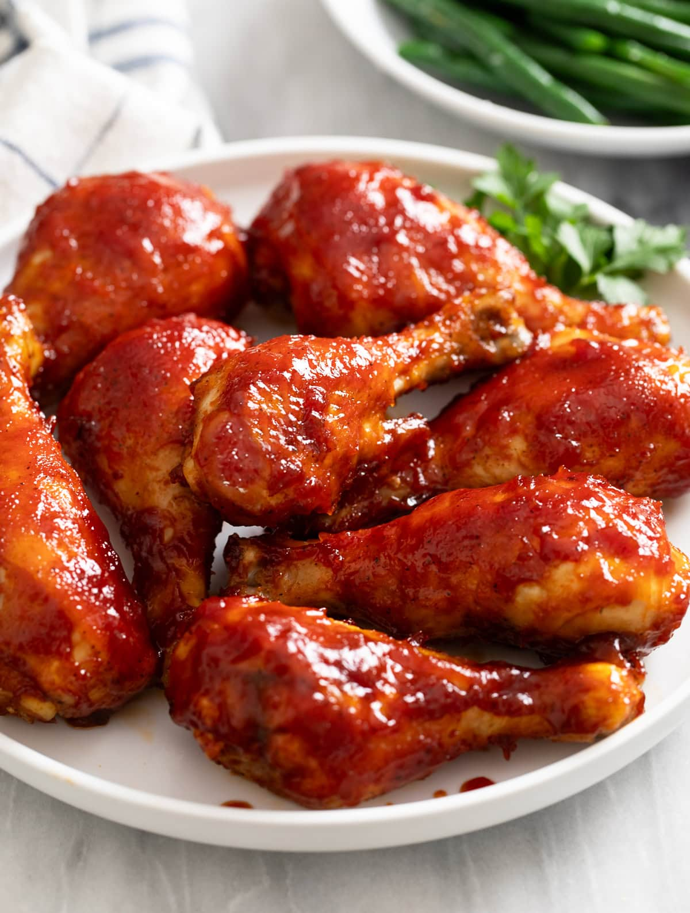

Baked BBQ Chicken

This Baked BBQ Chicken recipe is easy to make in the oven with homemade or store bought BBQ
Sauce! It pairs with
so many sides for an easy dinner idea!
Ingredients
- 8 chicken drumsticks, (about 1 ¾ lbs.)
- 3 tablespoons olive oil
- Salt/Pepper, to taste
- 1 teaspoon paprika
- 357.5 g barbecue sauce, see notes for homemade recipe
Instructions
Dry Brine
- This step is optional, but makes a big difference in the flavor and texture of the chicken. Pat the chicken
completely dry and sprinkle with salt on all sides. Line a baking sheet with 2 cooling racks and place the
chicken on top. Refrigerate uncovered for 2 to 20 hours, the longer the better. This will make it juicy on
the inside, crispy on the outside, and will season it inside and out.
Bake
- Preheat oven to 400°F.
- Pat the chicken completely dry. Season all sides with salt (if you haven’t already), along with pepper and
paprika. Brush skin-side-up with olive oil. Flip, then brush with more oil.
- Bake skin-side-down on a rimmed, light colored baking sheet for 26 minutes.
- Remove the chicken from the oven and wipe away excess oil/drippings. Baste with BBQ sauce (I use a “dabbing”
motion which helps me apply more sauce.) Flip the chicken so it’s skin-side-up. Baste with more BBQ sauce.
- Bake for 8 minutes.
- Remove the chicken and baste the tops with BBQ sauce a second time. Bake for 8 more minutes.
- Remove and baste with BBQ sauce for a third time. Bake for 8 more minutes.
- Optional: Broil at 425°F for a few minutes to crisp up the skin a little more. Watch it carefully during
this time.
- Remove and let rest for 5-10 minutes prior to serving. See blog post for pairing suggestions.
Home